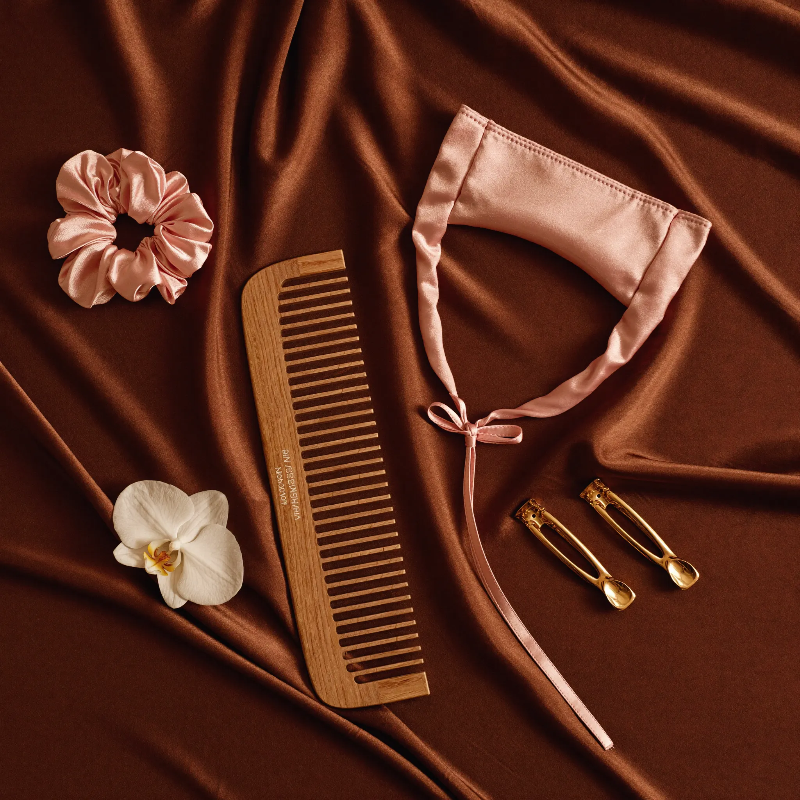

Método curly para principiantes en Colombia: por dónde empezar

El método curly (o Curly Girl Method) llegó para quedarse, y cada vez más colombianas están dejando la plancha para recuperar su textura natural. Pero entre tanta información en redes, empezar puede sentirse abrumador. Esta guía resume lo esencial, sin enredos y pensado para nuestro clima y nuestros productos.
¿Qué es el método curly?
Es una forma de cuidar el cabello rizado, ondulado y afro que se basa en una idea simple: el rizo necesita hidratación, no química agresiva. En la práctica significa eliminar los ingredientes que resecan o sellan mal la fibra, y construir una rutina que atrape la humedad dentro del rizo.
Los ingredientes que se van
- Sulfatos (sodium lauryl/laureth sulfate): detergentes fuertes que resecan. Se reemplazan por limpiadores suaves como el shampoo low poo.
- Siliconas insolubles (dimethicone, amodimethicone): dan brillo falso pero sellan el rizo y no dejan entrar la hidratación.
- Parabenos y aceites minerales (petrolato, mineral oil): crean película y acumulan residuo.
- Alcohol secante y calor extremo: plancha y secador directo, los enemigos históricos del rizo.
Todas las marcas que seleccionamos en Rizos Ondea son CG friendly: libres de sulfatos, siliconas insolubles y parabenos.
La transición: el momento más difícil (y más bonito)
Si llevas años de alisado o keratinas, tu cabello tendrá dos texturas: la raíz rizada nueva y los largos procesados. Es normal y es temporal. Tres consejos para atravesarla:
- No te compares. Tu rizo de los 3 meses no se parece al del año. La definición mejora a medida que la fibra sana.
- Hidratación intensiva: una mascarilla nutritiva semanal acelera la recuperación de los largos maltratados.
- Corta con calma: no necesitas el big chop si no quieres. Ve despuntando lo procesado poco a poco.
Qué necesitas para empezar (de verdad)
Olvida los 15 pasos que ves en redes. Para arrancar solo necesitas 4 cosas:
- Un shampoo sin sulfatos para limpiar.
- Un acondicionador con desliz para desenredar.
- Una crema de peinado para definir.
- Un gel para fijar y proteger.
Justo por eso recomendamos el Kit para Rizos Tongolé «La Poción»: shampoo, tratamiento, crema para peinar y mascarilla en un solo kit, con envío gratis a toda Colombia. Con el tiempo puedes sumar aceite, leave-in y accesorios según lo que tu rizo pida.
¿Cuánto tarda en verse el cambio?
Con constancia, la mayoría nota rizos más formados y menos frizz entre la semana 2 y la 6. El cabello muy dañado puede tardar algunos meses en recuperar elasticidad. La clave no es el producto milagroso: es la rutina repetida bien hecha. Y para eso estamos — si te enredas en el camino, escríbenos por WhatsApp y te acompañamos.